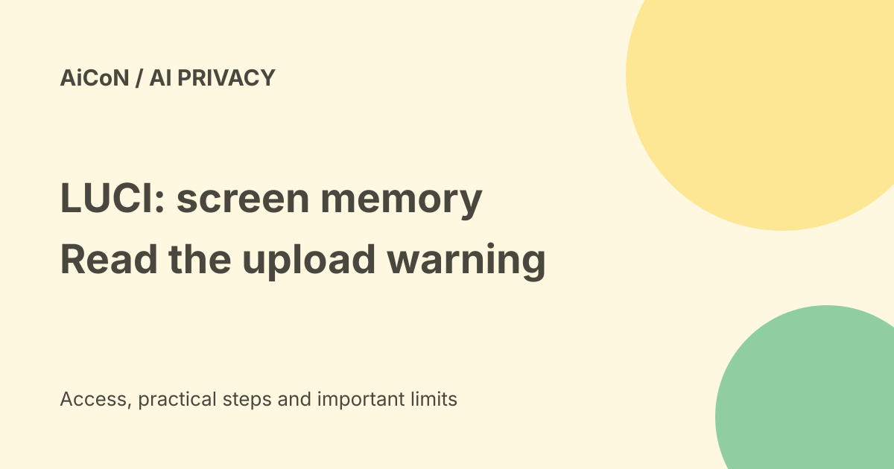

LUCI Desktop: screen memory with a privacy-policy conflict
LUCI Desktop can turn screen activity and meeting audio into searchable memory for AI tools. Its marketing and docs say this stays local. Its current privacy policy says recordings, audio and transcripts upload to a Memories.ai account by default. Until that conflict is settled, do not treat it as a verified local-only app.

What does LUCI capture?
The documentation describes screen capture, your voice and the other side of calls on your computer. It turns the activity into searchable context rather than just a video file to scrub through. Agents can use a local MCP connection to find context. MCP is a connection format for letting another AI tool use a service's capabilities.
The capture docs say nothing is captured until permissions are granted and the app is running. They describe switches for screen memory and meeting capture, and say quitting the app stops capture. Screen activity can include private emails, customer records, work documents and other people's speech, so consent and workplace rules matter.
Why the privacy conflict matters
The homepage says fully local and no cloud copy. System requirements describe network access for downloads and optional cloud features. But the privacy policy's default-upload wording covers the very recordings and transcripts used for memory. It is unsafe to turn those contradictory sources into a confident promise that nothing leaves your computer.
If you are considering LUCI, ask the vendor to confirm the current desktop version's upload behaviour and explain the policy mismatch. Inspect the actual settings before enabling capture. Do not record sensitive work or meetings on the assumption that marketing wording overrides a privacy policy.
Supported computers
| Mac | macOS 13 or later on Apple Silicon; Intel Macs are not supported in the cited docs. |
|---|---|
| Windows | Windows 10 or later, x64. |
| Memory | 8 GB RAM minimum. |
| Storage | About 500 MB for the app, plus room for recordings and memory. |
The docs do not list Linux as supported. A phone or tablet is not the recording machine in this setup. The current requirements do not justify telling readers that a special AI accelerator is mandatory.
Cost and India access
The homepage says LUCI is free. We did not verify account-specific cloud-feature charges or paid connected-model costs. A free download is not proof that every service it can connect to is free.
Indian users should check the supported device and download path, workplace policy and meeting consent. We did not install it in India or verify regional account availability. The privacy conflict is relevant regardless of country.
A cautious evaluation
- Read the current capture docs, requirements and privacy policy together.
- Ask the vendor about the default-upload contradiction before using sensitive data.
- If you test it, use a separate, non-sensitive session. Check capture switches, upload settings, app exclusions and connected agents first.
- Tell meeting participants about capture and get any required consent. Follow your organisation's policy.
- Inspect what was recorded, where it is stored, how to stop capture and how to delete local and account copies.
We did not install LUCI, grant screen or microphone permissions, record a call or connect an agent. No claim about actual network traffic or encryption was tested.
Redaction is not a guarantee
The docs say cards, keys and passwords are blacked out before saving. Treat that as a vendor feature claim. Automatic redaction may miss sensitive context that is not a password, such as health information or a confidential conversation. Keep sensitive windows out of any test and do not rely on redaction alone.
Frequently asked questions
Is it verified 100% local?
No. The current official sources conflict, and the policy explicitly describes default uploads.
Can I switch off uploads?
The policy says automatic uploads can be disabled in settings. We did not test the switch.
Does quitting stop capture?
The capture docs say it does. That does not answer what already-recorded data may have uploaded.
What changed since the earlier post?
The archive post claimed nothing was uploaded. This guide replaces that with the current policy warning and explains the contradiction, supported hardware and untested settings. Do not use the older local-only claim as a privacy guarantee.
Sources: LUCI homepage claims · Privacy policy and default uploads · System requirements · Capture documentation. Checked 7 October 2026.